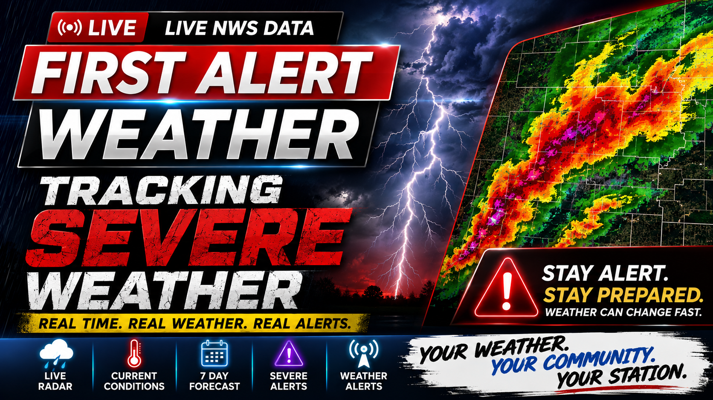

COLTRONS FIRST ALERT WEATHER
WEATHER CENTER CONTROL DASHBOARD
--:--:--
🌡️
Current Conditions
Live temperature, wind, humidity, pressure and conditions.
🕐
Hourly Forecast
12-hour forecast with temperature and precipitation chances.
📅
7 Day Forecast
Seven-day highs, lows, conditions and rain chances.
🗺️
Doppler Radar
Animated Wisconsin radar display.
🚨
First Alert
Active watches, warnings and advisories.
🌎
Wisconsin Temps
Statewide temperatures and warm/cool spots.
🌙
Overnight
Your overnight and morning weather presentation.
🎙️
News Desk
Open the full-frame News Desk overlay.
📺
TV MODE
Fullscreen TV mode. Automatically cycles weather pages. Press ESC to exit.